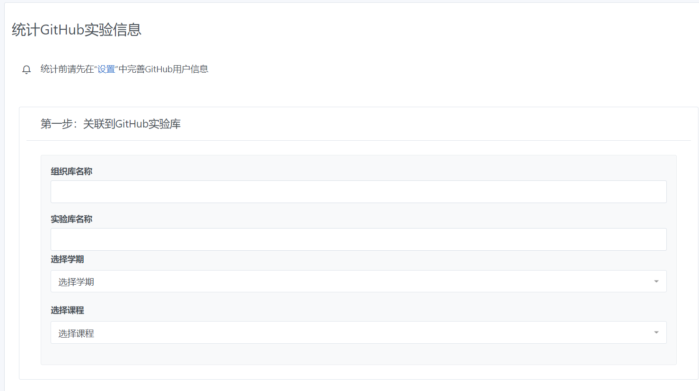
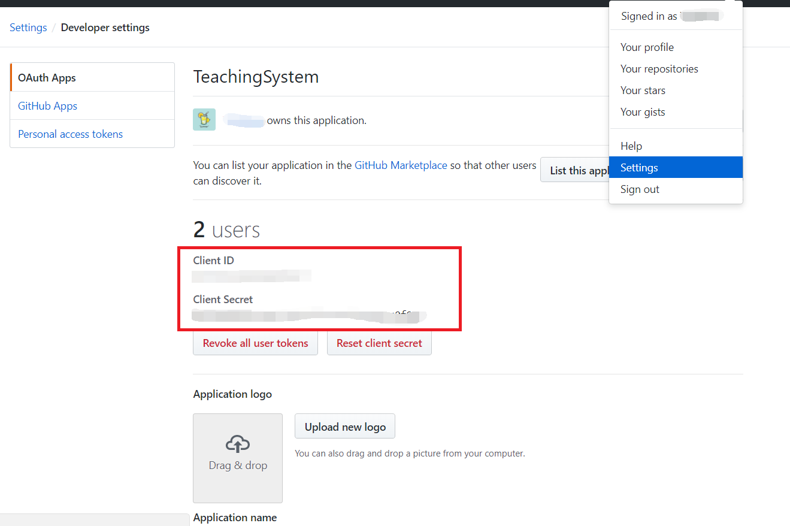

用户对象：教师
操作步骤：
对GitHub上进行的实验进行统计，生成实验报告。
在"统计GitHub实验信息"中填写GitHub实验“组织库名称”、“实验库名称”，然后选择对应课程及学期，最后填写成绩的组成，点击“统计数据”即可。如果实验库的数据较多，需要长达数小时的统计时间，请勿关闭。 参考链接：https://blog.csdn.net/u014175572/article/details/55510825
开启第三方认证可加快统计GitHub实验的速度
参考链接：https://www.cnblogs.com/TextEditor/p/5457379.html
为你的网站申请APP第三方验证
首先你必须要有一个Github的账号。注意这里的ClientID和SecretCode是整个OAuth的凭证，不要将这个信息泄露出去。
申请 OAuth Apps之后，如下图，找到ClientID和SecretCode，然后将其填写到您的GitHub信息中即可。
惠州学院 信息科学技术学院